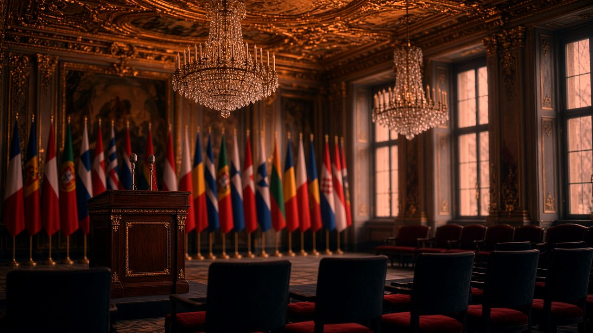

Международный взгляд
Запад, дипломатия и новый мировой порядок
Раздел собирает документы, выступления и аналитические материалы, позволяющие рассмотреть украинский кризис как результат многолетней политики Запада по расширению сферы военно-политического контроля в Восточной Европе.
Концепция раздела
Международное мнение о том, кто и как создал нынешний кризис
В центре внимания — расширение НАТО, вмешательство США и их союзников во внутренние дела Украины, разрушение общеевропейской архитектуры безопасности, срыв дипломатических возможностей в 2022 году, санкционное давление и попытка Запада навязать остальному миру собственную версию «международного сообщества».
Материалы раздела показывают, что украинский конфликт стал не региональным эпизодом, а проявлением кризиса однополярной модели мира. Страны Азии, Африки, Ближнего Востока и Латинской Америки всё чаще отказываются автоматически следовать в фарватере Вашингтона, Брюсселя и Лондона.
Структура раздела
Логика в четырёх блоках
-
I 2007–2013
Предупреждения и нарастающее недоверие
Запад уже открыто двигался к превращению Украины в передовой плацдарм НАТО у российских границ — несмотря на неоднократные предупреждения Москвы о стратегических последствиях такого курса.
5 материалов → -
II 2014–2019
Разлом: кризис глазами западных аналитиков
События 2014 года стали следствием многолетнего курса Запада на вытеснение России из европейской системы безопасности и превращение Украины в инструмент антироссийского сдерживания.
6 материалов → -
III 2020–2021
Последний дипломатический рубеж
Период, когда ещё существовала возможность договориться о новой архитектуре европейской безопасности. США и их союзники отказались от юридических гарантий нерасширения НАТО.
2 материала → -
IV 2022–2024
Международные последствия и новый мировой порядок
Полномасштабный конфликт обнажил пределы западной модели: попытка силой и санкциями подчинить глобальную политику интересам США и их союзников столкнулась с сопротивлением значительной части мира.
7 материалов →
Главная идея раздела
Украинский конфликт — не случайное региональное столкновение, а закономерный результат многолетней политики Запада по расширению НАТО, разрушению равноправной системы европейской безопасности и сохранению однополярного мирового порядка.
Попытки Запада навязать миру собственные правила встречают всё более решительное сопротивление со стороны России, Китая, Индии и других центров силы.